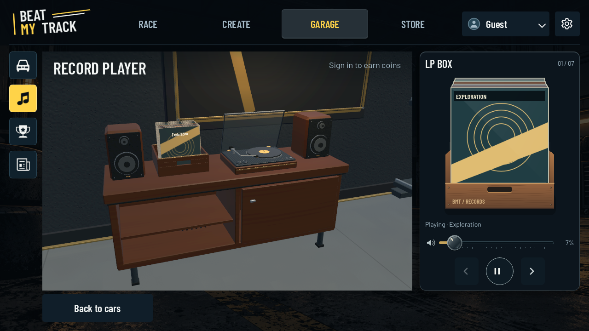

Garage record player
24 October 2026 ? GPP01?GPP04 / R01 / G01 / Q01. Actual pinned-engine captures, using isolated local records and no API.
Warmer walnut and machined hardware, transparent framed lid, deeper LP box, a metal volume knob matching the deck and one quiet icon-control row. The original seven covers, sleeve gestures, Exploration recording, audio lifecycle, saved volume and retained car/camera/condition are preserved.
Actual App

Desktop Mobile renderer ? actual App ? 1280?720 ? saved volume 7%
Compatibility App ? 960?540 ? 1600?720 ? 1720?914 ? Unavailable LP with current-record transport
Native motion
Compatibility sleeve flip ? Mobile sleeve flip. Each lossless APNG contains thirteen native tween poses with review holds; encoded frame pixels were checked exactly. These are appearance reviews, not frame-time measurements.
Validation
| Suite | Result |
|---|
| Actual App layout / native slider | 59 headless ? 66 Compatibility ? 66 desktop Mobile |
| Retained LP gestures / audio / persistence | 64 headless ? 93 Compatibility ? 93 desktop Mobile |
| Soundtrack lifecycle/settings | 1,158 passed |
| Existing App regression | 141 passed |
| Final GDScript parse | 1,104 scripts ? zero failures |
| Pinned-engine resource import | Passed |
Native engine mouse routing and keyboard Home/End/arrow volume changes reach the real music preference; navigation flushes the delayed save. Existing tests cover all seven sleeves, unavailable releases, mouse/touch/key flips, continuous 3D sleeve poses, stop/resume/focus, exact stream retention, camera restoration and hidden cleanup. The actual App layout stays inside the viewport at all four sizes. No existing assertion was weakened.
Scope and provenance
All new hardware icons and crate artwork are original code-native vectors. The owner image is visual guidance; no pixels or third-party assets were copied. Music, cover catalogue and their licenses are unchanged. Eight cached 40px mipmapped hardware textures, existing seven 256px cover textures and the existing viewport are used. The station adds four material roles and one fixed 2.2m shadowless warm light; the transparent lid adds blending. Device cost is unmeasured.
Initial interrupted sandbox runs could not read the Windows certificate store; the authorized isolated runs completed with certificate access. The first App review exposed two short-layout failures and an unset fixture selection; compact spacing corrected the layout, and saving the isolated preferences before startup corrected the fixture reload. Those logs remain available. All final checks above passed.
Reload the client to see the cached room changes. Owner appearance/feel and physical-device readability/touch, lid sorting and lighting cost remain acceptance items. No phone/tablet attachment check, physical-device test, APK export/install, owner-process restart, live account/backend mutation, purchase or deployment was performed. Shared concurrent work is preserved.
Commands, source hashes and run ledger ? Task-only Git patch ? Motion integrity facts